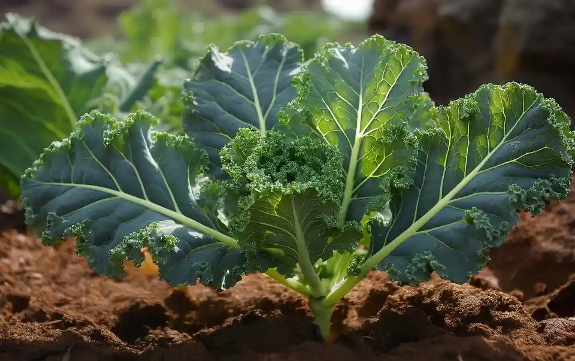
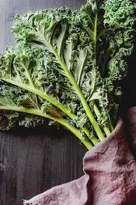
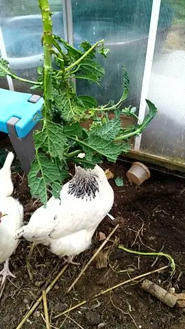

🥬 🌿 Can You Grow Kale and Collard Greens for Chickens?
Yes. Kale and collard greens are closely related, highly nutritious leafy crops that can be grown, harvested, and fed to backyard chickens in nearly the same ways. Both thrive during cool weather, fit small gardens and raised beds, and provide repeated supplemental harvests.
✅ Quick Answer
Yes. Chickens can safely eat fresh kale and collard greens, including tender leaves and young stems, as supplemental foods alongside a complete poultry ration. They can also safely eat cooked kale and cooked collard greens that have been boiled, steamed, or lightly cooked without butter, oils, salt, seasonings, garlic, onions, or sauces. Fresh greens remain the best everyday option because they retain slightly more nutrients and encourage natural pecking behavior, but cooked greens are an excellent way to use healthy kitchen leftovers.
Kale and collards are different cultivated forms of the same species, Brassica oleracea. Their nutritional value, growing requirements, harvest methods, and usefulness for chickens are so similar that backyard keepers can usually grow, harvest, and feed them in the same ways. Throughout this guide, the recommendations apply to both kale and collard greens unless otherwise noted.
- Both provide vitamins A, C, and K, carotenoids, calcium, moisture, and beneficial fiber.
- Both thrive during cool weather and produce repeated harvests throughout much of the growing season.
- Both are excellent supplemental greens but should never replace a balanced commercial poultry feed.
- Fresh greens provide the greatest nutritional value, while plain cooked kale or collards are a safe option for using leftover vegetables.
- Avoid feeding kale or collards prepared with butter, oils, salt, garlic, onions, sauces, seasonings, or other ingredients intended for people.
🥬 Are Kale and Collards Good Crops for Chickens?
Kale and collard greens are among the most practical leafy crops for backyard chicken keepers because they provide fresh supplemental greens, tolerate cool weather, and can produce multiple harvests from the same planting. Unlike grain crops that require drying and processing, kale and collards can be harvested gradually and offered directly to a flock throughout much of the growing season.
Chickens can eat kale and collard greens when they are clean, fresh, and offered as part of a balanced feeding program. These crops provide vitamins, minerals, moisture, and enrichment, but they should supplement—not replace—a complete poultry ration.
For homesteaders building a chicken feed garden, kale and collards are valuable because they fit small spaces, perform well in cooler seasons, and complement higher-energy crops such as grains, seeds, and legumes.
For chickens, kale and collards can provide:
- Fresh leafy-green enrichment
- Carotenoid-containing plant material
- Moisture
- Repeated harvests from established plants
- Cool-season garden production
- Use for clean outer leaves and household garden trimmings
- Pecking activity when leaves are hung in the run
Fresh leaves are mostly water and are low in concentrated dietary energy. Their best role is as a supplemental green rather than as a meaningful replacement for complete poultry feed.
⭐ Backyard Chicken Planner Recommendation
Our Recommendation: If you're only going to grow one cool-season leafy crop for your chickens, kale and collard greens should be near the top of your list. They are productive, beginner-friendly, tolerate cool weather, and can be harvested repeatedly over many weeks. They won't replace commercial feed, but they provide fresh greens, encourage natural foraging behavior, and help extend your homegrown feed garden into seasons when many other crops have stopped producing.
For most backyard flocks, we recommend growing both a cold-hardy kale variety and a locally adapted collard variety to compare productivity, pest resistance, and which your chickens prefer.
Is This Crop Right for Your Flock and Backyard?
Crop success depends on more than whether chickens can eat it. Climate, growing space, sunlight, soil, water, labor, processing, equipment, harvest goals, and storage all affect whether it is a practical choice for your property.
🌱 Use the Feed Crop Planner →🌱 Where Kale and Collard Greens Fit in a Backyard Feed Garden
Kale and collard greens are not intended to replace commercial poultry feed. Instead, they provide fresh, nutrient-rich forage during the cooler parts of the year when many warm-season feed crops have stopped producing. By combining cool-season crops like kale with warm-season crops such as sunflowers, cowpeas, pumpkins, and millet, backyard chicken keepers can provide homegrown supplements across much more of the year.
| Season | Role in the Feed Garden |
|---|---|
| 🌷 Spring | Excellent source of fresh leafy greens as gardens begin producing. |
| ☀️ Summer | Production often slows during prolonged heat, although collards generally tolerate warm Southern conditions better than many kale varieties. |
| 🍂 Fall | One of the best seasons for vigorous growth, repeated harvests, and high-quality leaves. |
| ❄️ Winter | Can continue producing in many regions, providing valuable fresh forage long after most annual vegetables have finished. |
Companion Feed Crops
Kale and collards work especially well when grown alongside crops that fill different nutritional or seasonal roles.
- 🌻 Sunflowers – Higher-energy seeds harvested in late summer and fall.
- 🌽 Field Corn – Concentrated energy crop for winter feeding.
- 🫘 Cowpeas – Protein-rich warm-season legume.
- 🌾 Proso Millet – Small grain that matures during summer.
- 🎃 Pumpkins & Winter Squash – Long-storage crops for fall and winter supplementation.
- 🌳 Mulberry – Summer leaf and fruit production.
📋 Kale and Collard Quick Facts
👨🌾 Is This Crop Right for Your Backyard?
Kale and collard greens are among the easiest and most rewarding cool-season crops for backyard chicken keepers. They don't require a large garden, produce repeated harvests, and provide valuable enrichment for chickens throughout much of the growing season.
| Situation | Recommendation | Why |
|---|---|---|
| 🌱 First-Time Gardener | ⭐⭐⭐⭐⭐ Excellent | Easy to grow, forgiving, and produces repeated harvests. |
| 🏡 Small Backyard | ⭐⭐⭐⭐⭐ Excellent | High production from a relatively small planting area. |
| 🪴 Raised Beds or Containers | ⭐⭐⭐⭐ Good | Many varieties grow well in raised beds and large containers. |
| 🥶 Cold Climates | ⭐⭐⭐⭐⭐ Excellent | Among the best leafy crops for extending the growing season. |
| 🥵 Hot Southern Climates | ⭐⭐⭐⭐ Good | Collards generally tolerate heat better than many kale varieties. |
| 💰 Reduce Feed Costs | ⭐⭐⭐ Moderate | Excellent supplemental crop, but not a significant replacement for commercial feed. |
| 🐔 Chicken Enrichment | ⭐⭐⭐⭐⭐ Excellent | Whole leaves encourage natural pecking behavior and reduce boredom. |
If you have room for only one cool-season planting, a combination of kale and collard greens provides one of the longest harvest periods of any leafy crop while giving your flock fresh greens through much of the year.
🌱 Should You Grow Kale, Collards, or Both?
Kale and collards are closely related, but their growing habits and climate performance are not identical.
Kale
Kale comes in curly, flat-leaf, deeply lobed, green, blue-green, purple, and red varieties.
Many kale varieties tolerate frost well and become sweeter or less bitter after cool weather.
Collard Greens
Collards usually develop broad, smooth or lightly textured leaves on an upright stem.
They are strongly associated with Southern gardens and often tolerate warmth better than many kale varieties.
Baby-Leaf Greens
Kale can be planted more densely and harvested young for small tender leaves.
This system produces many small plants but differs substantially from growing full-sized kale or collards for repeated outer-leaf harvest.
Grow one cold-hardy kale variety and one locally adapted collard variety. This gives you a useful comparison between winter hardiness, summer tolerance, leaf texture, pest pressure, and flock preference.
🗓 When to Plant Kale and Collards
Kale and collards grow best during cool weather. They may be planted in early spring and again in late summer for fall or winter harvest.
Warm-climate gardeners often get better results by treating them primarily as fall-through-spring crops rather than trying to maintain high-quality leaves through peak summer.
| Region | General Planting Approach | Likely Harvest Period |
|---|---|---|
| Cold North | Start transplants before the final spring frost or direct sow when soil is workable. Plant again in midsummer for fall harvest. | Late spring into early summer and again in fall until severe winter conditions stop growth. |
| Midwest and Northeast | Plant in early spring and again from midsummer into late summer. | Spring through early summer and fall into early winter. |
| Upper South | Plant in late winter or early spring and again from late summer through early fall. | Spring and fall through winter; protected plants may continue through mild winters. |
| Deep South | Plant primarily from late summer through fall and again in late winter where appropriate. | Fall through spring. |
| Southwest | Plant during the cool season. Use irrigation and afternoon shade where necessary. | Fall through spring, depending on elevation and winter severity. |
| Pacific Northwest | Plant in spring and again during summer for fall and winter harvest. Select hardy overwintering varieties. | Late spring through winter in many locations. |
| Coastal West | Mild areas may support extended planting, with strongest growth during cooler months. | Much of the year, depending on local heat and variety. |
📐 How Much Space Do Kale and Collards Need?
Spacing depends on whether you want baby greens, smaller kale plants, or full-sized mature plants.
- Approximately 8–12 inches for smaller kale plants or frequent young-leaf harvesting
- Approximately 12–24 inches for mature kale and collards
- Approximately 18–36 inches between conventional rows
Baby-leaf kale, mature kale, and full-sized collards use very different plant populations. One plants-per-square-foot value would make future garden-planning results misleading.
For a beginner feed garden, spacing plants approximately 12–18 inches apart is a practical compromise for repeated outer-leaf harvesting, provided the seed packet does not call for wider spacing.
🪴 How to Plant Kale and Collards
- Choose the correct season. Schedule the crop so most growth occurs during cool rather than severely hot weather.
- Select full sun or light shade. Full sun is preferred in cool weather. Afternoon shade may help in warm climates.
- Prepare fertile, well-drained soil. Add compost or organic matter where needed and avoid continuously waterlogged ground.
- Sow approximately one-quarter to one-half inch deep. Keep the shallow seed zone moist during germination.
- Thin or transplant carefully. Give mature plants enough room for airflow and repeated leaf production.
- Water consistently. Uneven moisture can produce tougher leaves and stressed plants.
- Protect seedlings from insects. Flea beetles and caterpillars can damage young plants quickly.
🌱 Direct Sowing Versus Transplants
Both crops may be direct-sown or transplanted.
Direct Sowing
- Costs less than purchased transplants
- Allows many varieties to be grown
- Works well for fall planting in warm soil
- Requires careful watering and early pest protection
- May require thinning
Transplants
- Provide a head start for spring or fall planting
- Make final spacing easier
- Help plants compete with weeds sooner
- May be easier for first-time gardeners
- Can become root-bound if held too long
For a beginner, a combination works well: buy a few transplants for an early harvest and direct sow a second planting for later production.
💧 Watering Kale and Collards
Consistent moisture supports tender leaf growth. Approximately 1–1.5 inches of combined rainfall and irrigation per week is often used as general cool-season garden guidance, but actual need depends on soil, temperature, wind, mulch, and plant size.
Good watering practices include:
- Water deeply enough to moisten the root zone.
- Avoid allowing plants to wilt repeatedly.
- Use mulch to conserve moisture and reduce soil splash.
- Water near the base when possible.
- Avoid keeping the soil continuously saturated.
- Reduce watering frequency during cool, cloudy weather when soil remains moist longer.
Hot, dry conditions can make leaves tougher, more bitter, and more attractive to some pests.
🌿 Fertility and Soil
Kale and collards are leafy crops and respond to reasonably fertile soil. Nitrogen supports leaf production, but fertilizer should be based on soil conditions rather than applied blindly.
A soil pH of approximately 6.0–7.5 is suitable for many gardens.
A soil test can help determine whether the garden needs:
- Lime
- Nitrogen
- Phosphorus
- Potassium
- Organic matter
- Micronutrient correction
Avoid placing strong fertilizer directly against seeds or roots. Excessive nitrogen may produce very soft growth and does not eliminate the need for balanced soil fertility.

✂️ Harvesting Kale and Collards for Chickens
Kale and collards are excellent repeated-harvest crops because outer leaves can be removed while the central growing point continues producing new foliage. Harvesting selectively provides fresh greens over a longer period than one-time vegetable crops.
- Wait until several usable leaves have formed. Do not strip small seedlings before they establish.
- Select the oldest healthy outer leaves. Leave younger center leaves to continue growing.
- Cut or snap leaves cleanly. Avoid tearing the main stem or damaging the growing point.
- Leave enough foliage. The plant needs healthy leaves to continue photosynthesis and regrowth.
- Harvest regularly. Removing usable outer leaves prevents them from becoming overly tough or damaged.
- Remove diseased leaves separately. Do not feed moldy, slimy, heavily spotted, or rotting leaves.
Kale and collards may continue producing until severe heat, hard winter conditions, bolting, disease, or pest damage ends the useful harvest.
🐔 Can Chickens Graze Living Kale and Collard Plants?
Chickens will often peck leaves directly from living plants, but unrestricted access can destroy young plants quickly.
Better options include:
- Harvesting leaves and carrying them to the flock
- Allowing brief supervised access to mature plants
- Protecting the plant crown with wire mesh
- Growing plants outside the run and reaching leaves through fencing
- Using a rotation system so damaged plants can recover
Chickens may scratch around the roots, strip leaves, break stems, and expose the crown. Established plants need protection if repeated harvest is the goal.
🪝 Offering Whole Leaves as Enrichment
Large leaves may be clipped or hung at chicken-head height to provide pecking activity.
This can:
- Slow consumption
- Keep leaves off muddy ground
- Encourage natural pecking behavior
- Reduce trampling and waste
- Provide activity during confinement
Use a secure holder that cannot create a sharp edge, loose string, entanglement hazard, or choking risk.
🧊 Storing Harvested Kale and Collards
Fresh leaves are highly perishable compared with dry grains or winter squash.
For short-term storage:
- Harvest during the cool part of the day.
- Remove excessive field heat promptly.
- Discard damaged or slimy leaves.
- Refrigerate in a breathable or loosely closed food-storage container.
- Use within several days to roughly one week, depending on leaf condition.
For longer storage, plain greens may be blanched and frozen. Frozen greens should be thawed or portioned appropriately before feeding so large frozen masses do not remain in the run.
Leaves may also be dried and crumbled, but drying greatly concentrates nutrients and plant compounds. Dried greens should be offered in much smaller amounts than fresh leaves.

🐔 Feeding Kale and Collards to Chickens
Fresh kale and collard leaves provide moisture, vitamins, plant compounds, and enrichment. The best use is as a supplemental green offered alongside a complete poultry ration.
- Whole fresh leaves
- Leaves hung for pecking enrichment
- Chopped fresh greens
- Tender stems
- Plain cooked and cooled leaves
- Blanched and frozen greens after appropriate thawing
- Dried and crumbled leaves in small amounts
- Clean outer leaves removed during household harvest
Fresh kale and collards contain substantial water and relatively little concentrated energy. Heavy feeding can reduce consumption of the balanced ration that supplies amino acids, calcium, vitamins, and minerals.
🥗 Kale and Collard Greens Nutrition for Chickens
Fresh kale and collards contain water, fiber, vitamins, minerals, carotenoids, and other plant compounds. Their exact composition varies by variety, plant maturity, growing conditions, preparation, and whether values are measured on a fresh or dry basis.
| Nutritional Feature | General Contribution | Important Limitation |
|---|---|---|
| Water | Fresh leaves are moisture rich | Fresh weight can exaggerate the apparent amount of feed provided. |
| Crude protein | Approximately 3–4% on a fresh basis | Too low and dilute to replace concentrated poultry protein. |
| Fat | Generally about 1% or less when fresh | Provides little concentrated dietary energy. |
| Carotenoids | Includes beta-carotene, lutein, and zeaxanthin | Actual intake and yolk-color response depend on the complete diet. |
| Calcium | Leaves contain measurable calcium | Does not replace properly formulated layer feed or a suitable calcium source. |
| Vitamins | May include vitamins A precursors, C, K, and folate | Storage and cooking can change vitamin concentration. |
Raw kale is commonly described as being approximately 84% water, while raw collards are around 90% water. This is why a large pile of greens does not equal the same amount of nutrition as an equal weight of dry complete feed.
⚠️ Brassica Feeding Limitations
Kale and collards belong to the Brassica group and contain glucosinolates and related plant compounds.
- Do not allow brassica greens to dominate the diet.
- Do not replace complete feed with large quantities of leaves.
- Do not assume leafy calcium meets the needs of laying hens.
- Older leaves and stems may be fibrous and less palatable.
- Dried leaves are more concentrated than fresh leaves.
- Do not feed moldy, slimy, fermented, or rotting greens.
- Do not feed cooked greens containing excessive salt, grease, onions, or unsuitable seasonings.
- Use only plants free from unsafe pesticide residues.
Moderate supplemental feeding is very different from using concentrated brassica seed meals or making brassicas a major portion of a formulated ration.
🐛 Common Kale and Collard Pests
| Problem | What You May Notice | Possible Response |
|---|---|---|
| Cabbage worms and loopers | Chewed leaves, holes, green caterpillars, or dark droppings | Inspect leaf undersides, handpick caterpillars, use row covers, and follow food-crop treatment labels. |
| Flea beetles | Many tiny round holes, especially on seedlings | Protect young plants with row covers and maintain healthy growth. |
| Aphids | Clusters of small insects, curled leaves, or sticky residue | Wash off light infestations, encourage beneficial insects, and use approved controls when necessary. |
| Slugs and snails | Irregular holes and slime trails | Reduce hiding places, inspect after dark, and use poultry-safe management methods. |
| Harlequin bugs | Colorful shield-shaped insects and pale feeding damage | Inspect plants regularly, remove eggs and insects, and clean crop residue. |
| Imported cabbageworm eggs | Small yellow eggs on leaf undersides | Inspect frequently and remove eggs before larvae hatch. |
🦠 Common Diseases and Crop Problems
| Problem | What You May Notice | Possible Response |
|---|---|---|
| Black rot | Yellow V-shaped lesions moving inward from leaf edges | Use clean seed or transplants, rotate brassicas, avoid working wet plants, and remove infected material. |
| Downy mildew | Yellow patches and gray growth beneath leaves | Improve airflow, avoid unnecessary foliage wetting, and use resistant varieties where available. |
| Alternaria leaf spot | Dark circular leaf spots | Rotate crops, remove residue, and avoid saving seed from infected plants. |
| Clubroot | Stunted plants, wilting, and swollen distorted roots | Avoid moving contaminated soil, improve drainage, and follow long crop rotations. |
| Bolting | Tall flowering stalk and reduced leaf quality | Plant during the correct season and choose adapted varieties. |
| Heat stress | Wilting, tough leaves, bitter flavor, or slowed growth | Use mulch, consistent watering, afternoon shade, and better planting dates. |
❄️ Can Kale and Collards Grow Through Winter?
Mature kale and collards tolerate frost better than most warm-season garden crops. Exact hardiness depends on variety, plant maturity, wind, soil moisture, snow cover, and duration of freezing temperatures.
Season-extension methods include:
- Row covers
- Low tunnels
- Cold frames
- Mulch around the root zone
- Wind protection
- Choosing winter-hardy varieties
Plants may stop growing during very cold weather but resume growth when temperatures moderate. Harvest leaves before severe freezes when local conditions are expected to exceed the variety’s tolerance.
📊 Are Kale and Collards Worth Growing for Chicken Feed?
Kale and collards are unlikely to replace a large amount of purchased feed, but they can provide substantial garden value through repeated harvests.
Potential benefits include:
- Cool-season production
- Repeated leaf harvests
- Household and poultry use
- Small-space suitability
- Container-growing potential
- Winter or shoulder-season enrichment
- Use of clean outer leaves and trimmings
- Easy hand harvesting
Their main economic limitation is that fresh leaves contain substantial water and little concentrated energy. They are better viewed as a fresh enrichment crop than as a direct substitute for bagged feed.
🥬 A Simple Beginner Greens Plan
For a first planting, grow four kale plants and four collard plants in a cool-season bed.
- Choose locally adapted varieties.
- Plant in early spring or late summer.
- Space plants approximately 12–18 inches apart unless the variety requires more room.
- Protect seedlings with insect netting or row cover.
- Water consistently.
- Harvest only a few outer leaves from each plant at a time.
- Hang one leaf in the run and chop another to compare flock preference.
- Keep the central growing point intact.
- Record which crop survives heat, frost, and pests better.
This small trial will provide repeated greens without dedicating a large garden area to the crop.
❓ Frequently Asked Questions
Can chickens eat kale?
Yes. Chickens can eat clean, fresh kale leaves as a supplemental green.
Can chickens eat cooked kale or cooked collard greens?
Yes. Chickens can safely eat plain cooked kale or cooked collard greens that have been boiled, steamed, or lightly cooked. Do not add butter, oils, salt, garlic, onions, sauces, or other seasonings. Fresh greens generally retain slightly more nutrients and provide better pecking enrichment, but cooked greens are an excellent way to use healthy kitchen leftovers.
Is kale better than collard greens for chickens?
Not significantly. Kale and collard greens are both cultivated forms of Brassica oleracea and provide very similar nutrition for backyard chickens. Both supply vitamins, minerals, fiber, moisture, and pecking enrichment. The better choice is usually whichever grows best in your climate and garden.
Can baby chicks eat kale or collard greens?
Yes, but only in moderation and after they are eating a complete chick starter feed. Offer very small, finely chopped pieces as an occasional treat once chicks are old enough to safely consume greens. Chick starter should remain their primary source of nutrition during early growth.
Can chickens eat kale every day?
Kale can be offered regularly as a supplemental green, but it should not replace a balanced commercial poultry feed. Rotating kale with other leafy greens and garden vegetables provides greater dietary variety and helps prevent excessive reliance on any single food.
Which is easier to grow for chickens, kale or collard greens?
Both are easy cool-season crops for backyard gardens and raised beds. Collard greens generally tolerate heat slightly better, while many kale varieties tolerate colder temperatures. Both produce repeated harvests and are excellent choices for growing supplemental chicken feed.
Is kale good for laying hens?
Kale can provide vitamins, minerals, moisture, and enrichment for laying hens. However, it does not provide the complete calcium, amino acid, and energy balance required for maximum egg production.
Can chickens eat collard greens?
Yes. Fresh or plain cooked collard greens may be offered in moderation.
Can chickens eat kale stems?
They may eat tender stems. Tough older stems can be chopped, although some may be left uneaten.
Will kale and collards grow back?
Yes. Removing outer leaves while leaving the central growing point intact allows continued production.
Can chickens eat frost-damaged kale?
Sound leaves exposed to light frost may still be usable. Do not feed leaves that have become slimy, rotten, moldy, or contaminated.
Are collards more heat tolerant than kale?
Collards are often more tolerant of warm Southern conditions, although variety selection, water, shade, and planting date remain important.
Can kale replace layer feed?
No. Kale is moisture rich and low in concentrated energy and balanced protein. It should remain supplemental.
🌱 Explore More Feed Crops
🧰 Helpful Chicken Planning Tools
📚 Research Sources
This guide was developed from university Extension horticulture guidance, USDA nutrient resources, and the Backyard Chicken Planner feed-crop database.
Used for cool-season planting, soil, spacing, water, harvesting, and pest-management context.
Used for Southern collard and kale planting, variety selection, fertility, insect pressure, disease, and harvest timing.
Used for crop history, warm-region production, planting, harvesting, and collard variety context.
Used for fresh kale and collard moisture, protein, fat, fiber, calcium, vitamins, minerals, and carotenoid context.
Used for balanced-ration principles and the role of garden greens as supplemental rather than complete poultry feed.